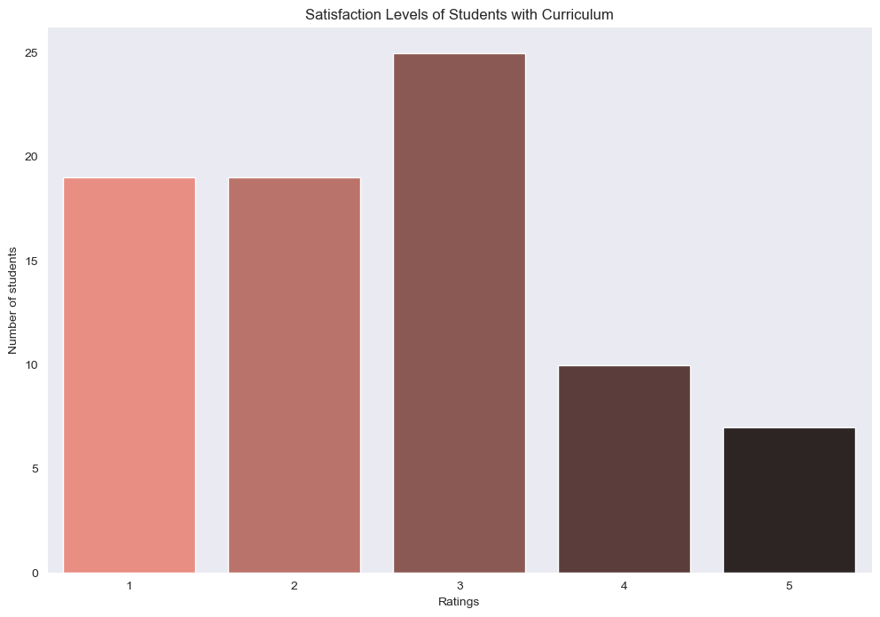

College Overview
Panipat Institute of Engineering and Technology (PIET), located in Panipat, Haryana, is a premier institution known for its academic excellence, modern infrastructure, and industry-aligned education. Established in 2006, PIET is affiliated with Kurukshetra University and approved by AICTE and UGC.
With a strong focus on holistic development, PIET offers a wide range of undergraduate, postgraduate, and diploma programs in Engineering, Management, Computer Applications, and other professional disciplines. The institute blends academic rigor with practical exposure, equipping students with skills that meet industry demands.
Gallery & Location


Location
Word Cloud
Generated from 80 student reviews
Graphs and Analytics
Faculty Ratings
Curriculum Ratings
Infrastructure Ratings
College Crowd & Life Ratings

Facilities Ratings
Satisfaction Levels (Value for Money)
Referral Count (Students Who'd Recommend PIET)